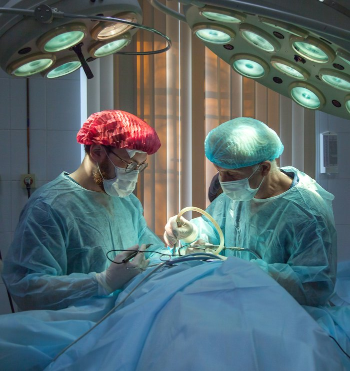
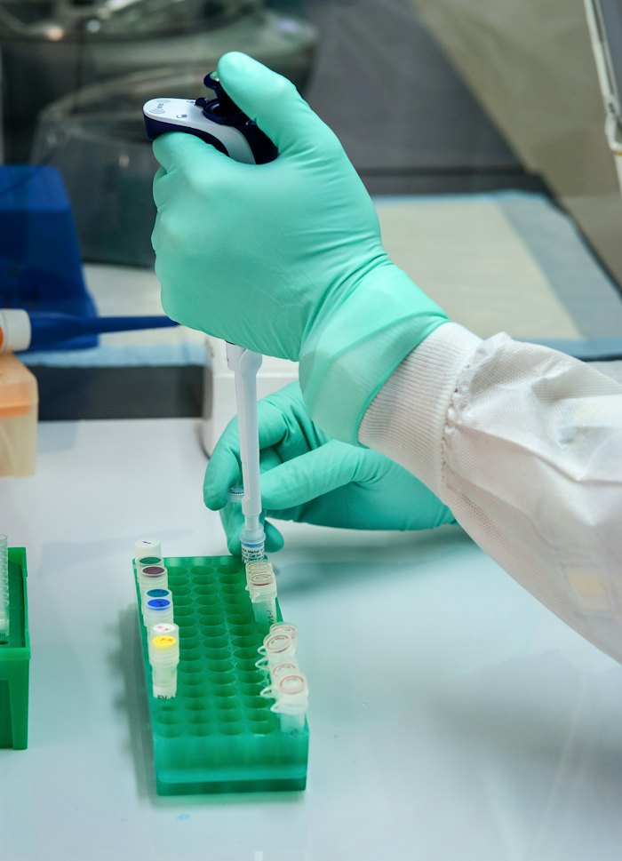

The story in brief
Going to a public hospital used to mean carrying a folder of prescriptions, scans and lab reports — and explaining your entire history from scratch every time. eHealth Kerala builds a single record that follows you across PHCs, district hospitals and medical colleges, so the doctor in front of you knows what the last one prescribed.
For Mariam, managing her father's diabetes used to mean three folders, two hospitals, and a stack of duplicated tests. With eHealth, his records show up wherever he is seen — including the medical college where he was eventually referred.
More than the convenience, the platform reduces medical error. A doctor in a district hospital can see the medication trail and avoid prescribing what didn't work or what interacts badly. The state, in turn, gets to see disease patterns it could only have guessed at before.
What changed for people
- Your medical history is available at every public health facility you visit — without you having to carry paper.
- Test results, prescriptions and discharge summaries follow you, including across PHC, district and tertiary care.
- Doctors spend less time scribbling, more time examining and explaining.
- Public health programmes (TB, NCD, maternal) now run on the same record as your acute-care visits.
The officer playbook
Overview
eHealth Kerala began as a state-led initiative to put OPD registration, billing and prescribing into a single open-source platform — and grew into a comprehensive EHR that connects the primary health centre to the medical college.
Architecturally, it is built on OpenMRS and other open-source components, with strong attention to interoperability and citizen consent. Functionally, it is built on the discipline of incremental roll-out: one module at a time, one type of facility at a time.
By the time of the pandemic, eHealth was the substrate that Covid Jagrata's clinical modules ran on top of — a quiet demonstration that long-horizon digital public health investment pays off precisely when emergencies make it impossible to build from scratch.
Challenges
Doctor adoption
Clinical workflows are unforgiving. Any system that adds friction to the OPD bench will be abandoned by lunch. Continuous co-design with clinicians was non-negotiable.
Connectivity at PHC level
Many primary facilities work in low-bandwidth conditions. Offline-tolerant clients and edge servers were essential to avoid excluding the smallest facilities.
Privacy and consent
Health records are sensitive. Purpose-limited access, audit logs, and explicit consent for cross-facility sharing were built in from the start.
Integration with vertical programmes
TB, leprosy, NCD and maternal health programmes had their own legacy registers. Migrating them to eHealth without disrupting reporting required staged interface work.
What was done
- Adopted OpenMRS as the core EHR platform, extended with Kerala-specific clinical and administrative modules.
- Rolled out by facility type: medical colleges first (high capacity), then district hospitals, then PHCs.
- Established a clinician co-design cell with rotating clinical fellows to keep workflows realistic.
- Built offline-tolerant clients with edge servers for low-bandwidth PHCs.
- Implemented explicit consent flows and tamper-evident audit logs for all cross-facility access.
- Integrated vertical public health programmes (TB, NCD, maternal/child health) into the same record.
Technology & systems
- OpenMRS-based EHR with Kerala-specific modules
- FHIR-compatible APIs for inter-facility and inter-state interoperability
- Offline-tolerant clinical clients with conflict-free sync
- PostgreSQL with row-level access control and audit logs
- Aadhaar-optional patient identification (with alternative ID flows)
- Public dashboards for service-level indicators (waiting time, OPD load)
Outcomes
- Over 1,200 public health facilities live on eHealth across the state.
- Over 60 million patient records active, with cross-facility lookup at PHC → tertiary.
- OPD consultation time reduced by an estimated 40% per visit (median across pilot facilities).
- Adverse drug interactions caught earlier, especially in chronic-care patients.
- eHealth substrate enabled rapid clinical roll-out during the pandemic — and supports current TB, NCD and maternal programmes.
Process flow
1. Patient registration
Single patient ID generated; existing records (if any) auto-linked with consent.
2. OPD workflow
Clinician sees history, prescribes, orders tests on the platform; printable summaries available.
3. Labs and pharmacy
Connected lab and pharmacy modules — results and dispensing in the same record.
4. Referrals
Higher-tier facilities receive the patient with the record intact — no re-explanation required.
5. Public health linkage
TB, NCD, maternal/child indicators auto-populated; vertical programmes consume the same record.
6. Audit and learning
De-identified analytics drive epidemiology, OPD redesign and procurement decisions.
Replication toolkit
- OpenMRS-based reference architecture document
- Clinician co-design cell charter and operating model
- Offline-tolerant client deployment runbook
- Consent and audit policy templates
- Vertical programme integration playbook (TB / NCD / maternal)
- Service-level dashboard definitions
On the ground



How it unfolded
- Phase 1
Medical college pilots
OPD registration, billing and prescribing rolled out at tertiary facilities.
- Phase 2
District hospitals onboard
Referrals across tertiary and secondary care begin to work in a single record.
- Phase 3
PHC roll-out
Offline-tolerant clients deployed; PHCs connected with edge sync servers.
- 2020
Covid use
eHealth substrate supports rapid clinical roll-out during the pandemic via Covid Jagrata modules.
- Ongoing
Vertical programme integration
TB, NCD and maternal/child health programmes brought onto the same record.
Documents & templates
Request any of these by email — we will share what is available.
Want to adapt eHealth Kerala in your district?
Tell us your context and constraints — we will connect you with the toolkit and the people who built it.